Hobbies
I love going trekking in the mountains of Nepal to recharge myself from time to time. When at home i like to watch some good animes and movies. I also love reading mangas and fictional novel. I am also interested in learning about world history of all time periods, including Classical, Medieval, Napoleonic and the 20th century time periods. I love consuming mathematics and scientific contents, may it be from book or the internet (especially if i get to strech my own problem solving muscles). Philosophy, mythology and geopolitics are always fun to talk about. My hobbies can be summed up as staying curious and exploring new places and ideas.
Trekking
I think every person should experience climbing mountains at least once in their life. It is fun and it makes your mind, body and soul fresh and energized. When you see the amazing views from the mountain, it makes you feel truly alive. And like most things in life, trekking is the finest when shared with good friends. Most of the trekking i have gone till now are with my friends from high school, Aviyan Acharya and Sandesh Acharya who are also coincidentally studing in the same college as me.
Langtang trek
Here we started from Syaprubesi and reached till Kyangjin Ri peak at 4400 meters. It was the trek with the most beautiful view that we had gone till that moment. It was just breathtaking.
Chitlang-Kulekhani trek
Here we went to chitlang, markhu and kulekhani. We also did camping and cooked food and meat primitive style using firewood. Was lots of fun.
Nagarkot trek
Here we went to nagarkot and climbed the nagarkot view tower.
Sundarijal hike
Very beutiful rivers and waterfalls. Also climbed shivapuri peak there.
Chandragiri hike
This route was a bit broken and not propertly taken care of(maybe because everyone goes using cable car now) but the challenge was fun.
Champadevi hike
First Hike we went. Couldnt reach the top because of very heavy rain but still very fun.
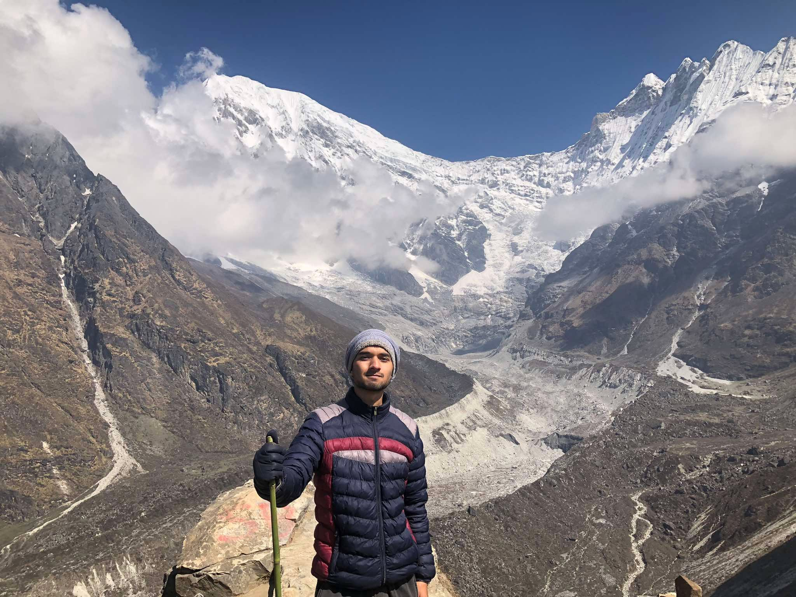
Langtang1
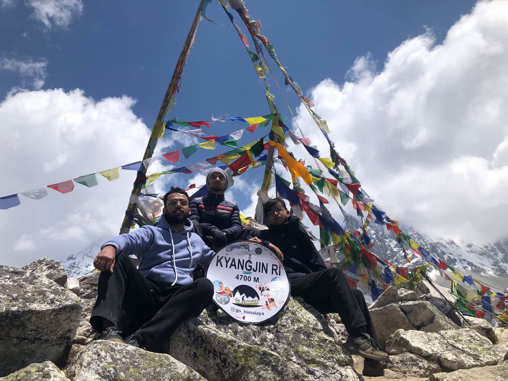
Langtang2
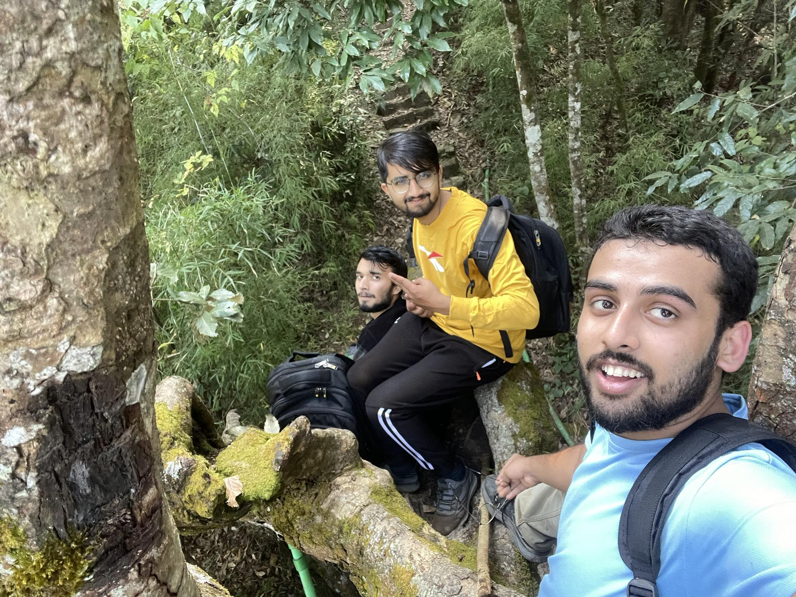
Chandragiri
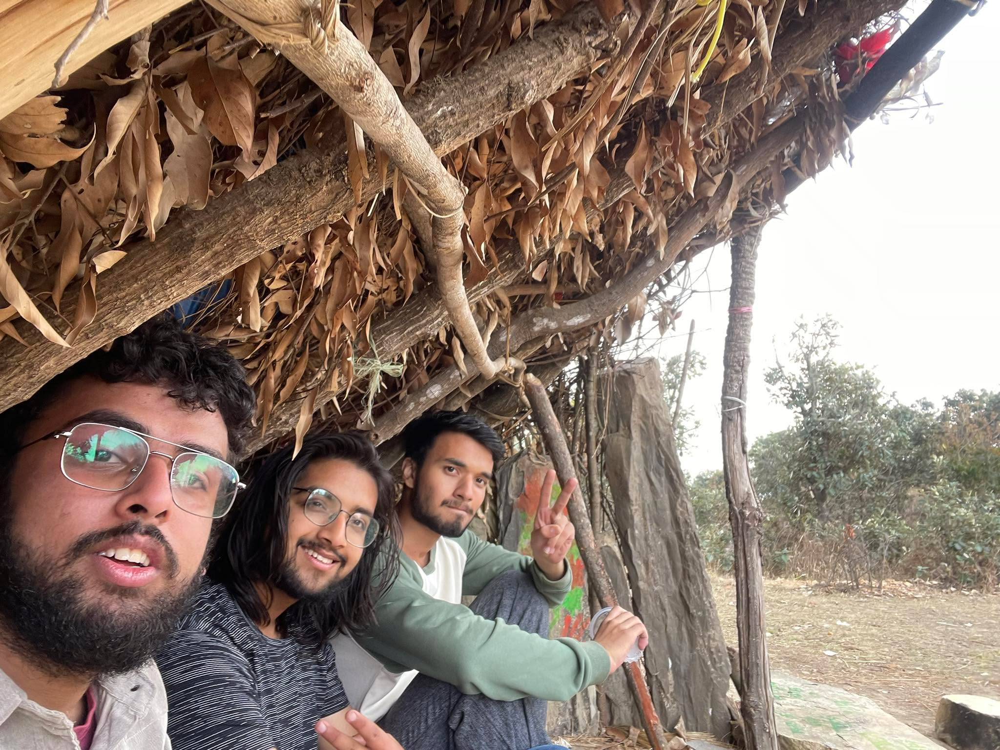
Champadevi
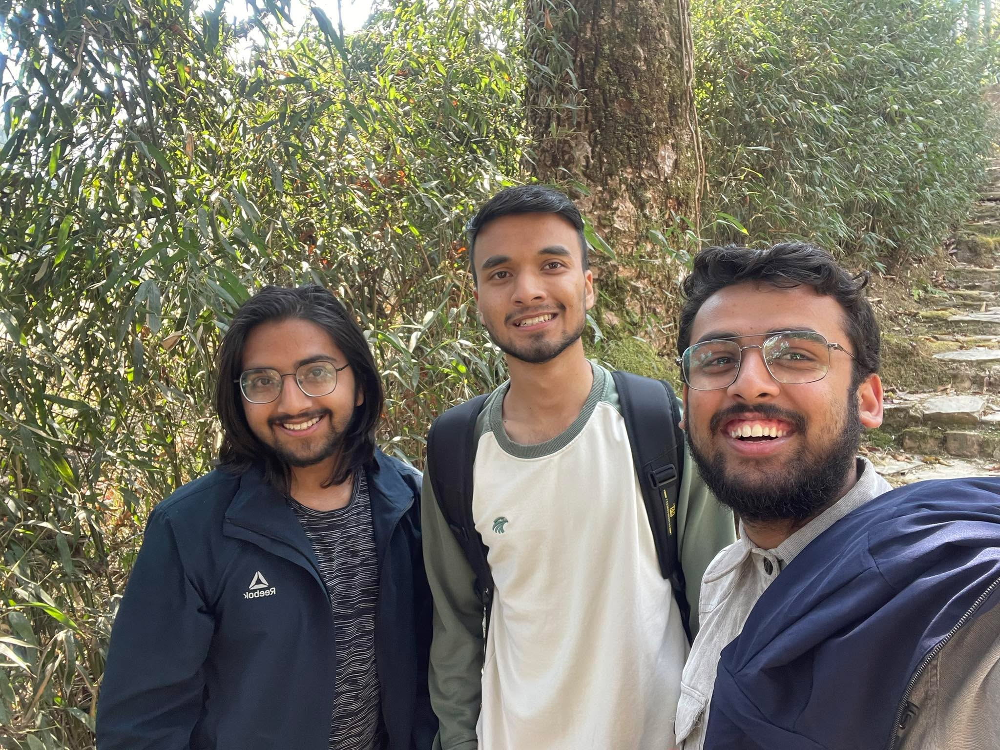
Champadevi
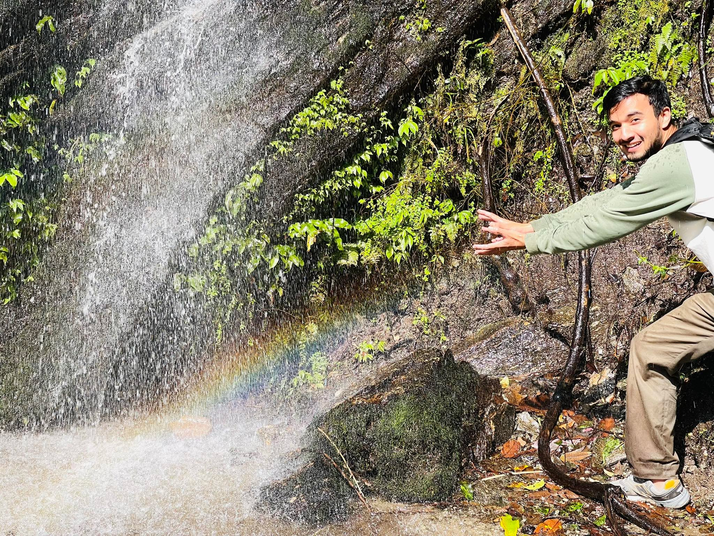
Sundarijal1
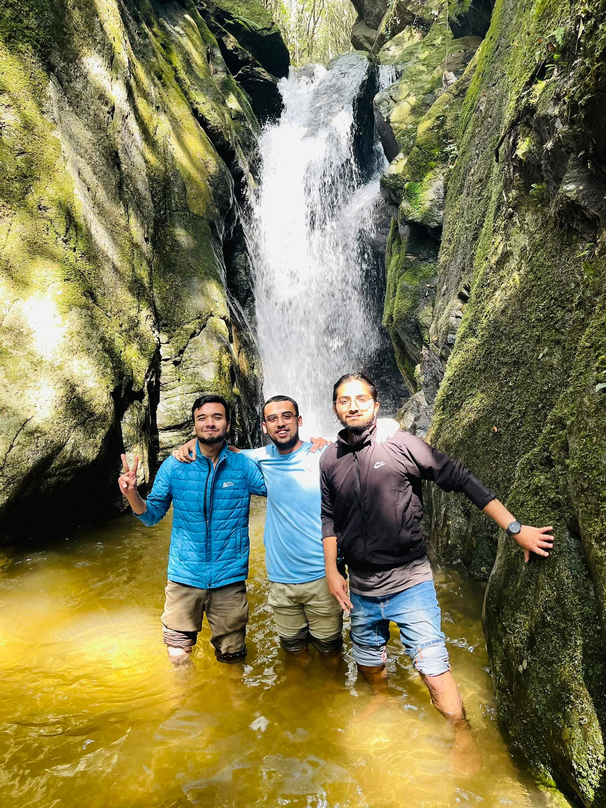
Sundarijal2
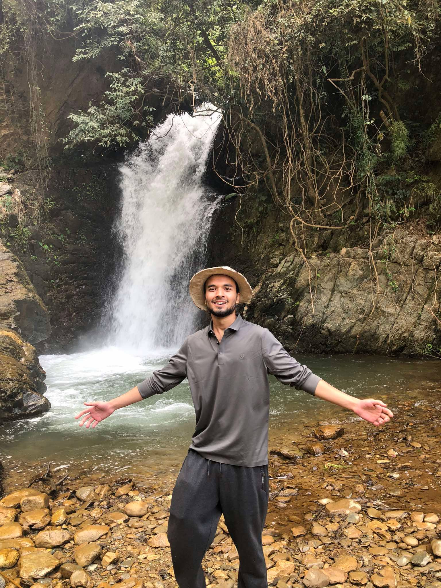
Chitlang1
Anime
I have loved watching animes since i was in 7th grade. The first anime i watched was Naruto but since then i have probably watched hundreds of animes till now, both short and long. Some animes that I particulary liked are Death Note, Promised Neverland, Odd Taxi, Daily lives of highschool boys, and a more recent anime Chainsmoker Cat.
DeathNote
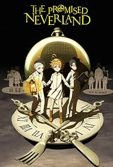
Promised Neverland
Odd Taxi
Daily lives of Highschool Boys
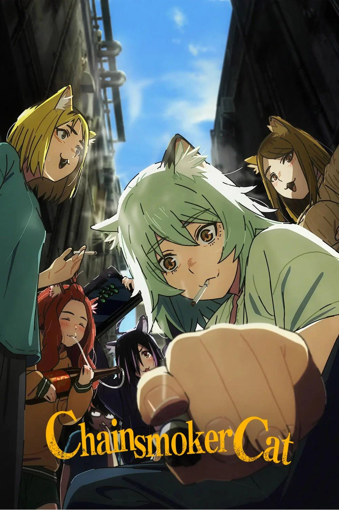
Chainsmoker Cat
Manga
Some mangas are just better than anime and I think mangas are better for more immersion. Some mangas that i really liked are Junji Ito Horror Mangas, Chainsaw man, Delicious in the Dungeon, and Berserk which i am currently reading.
Uzumaki - Junji Ito
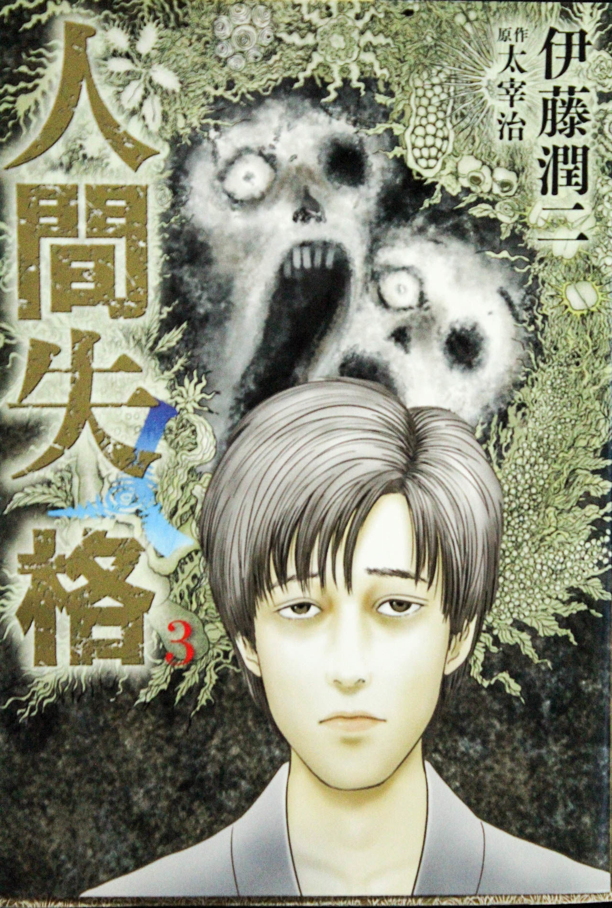
No Longer Human - Junji Ito
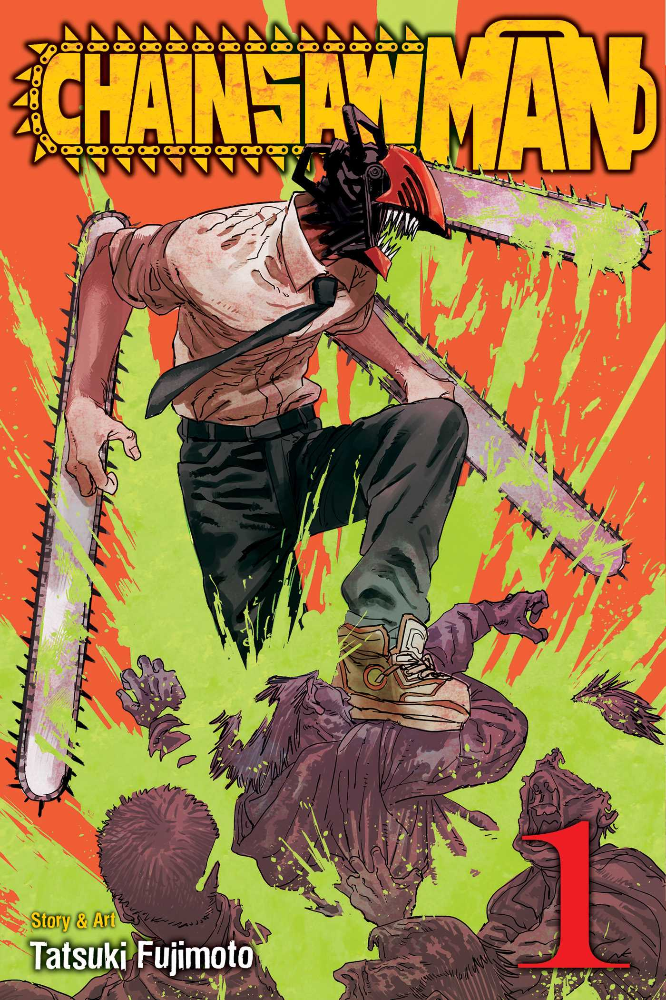
Chainsaw Man
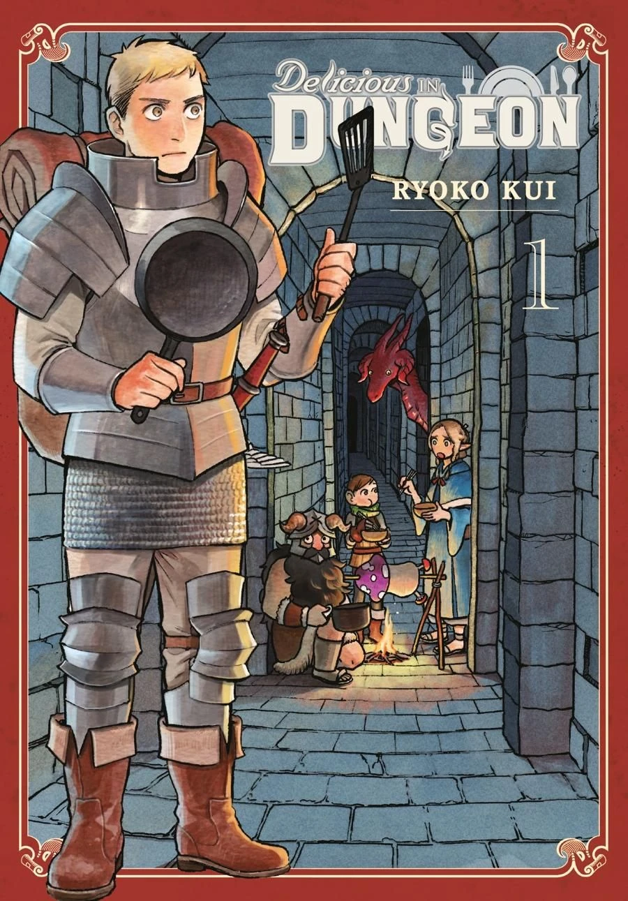
Delicious In The Dungeon
Berserk